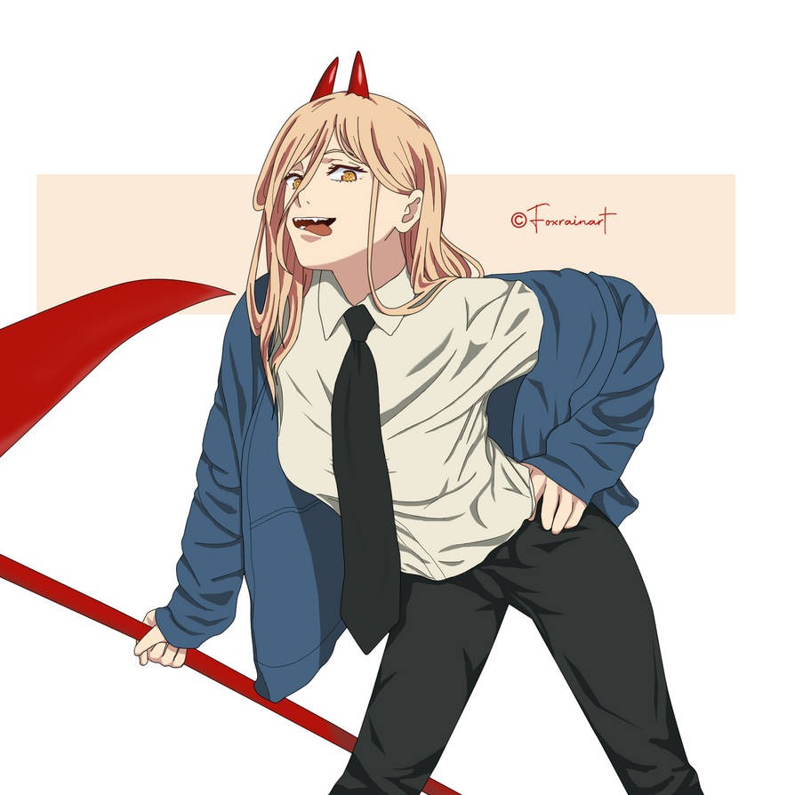
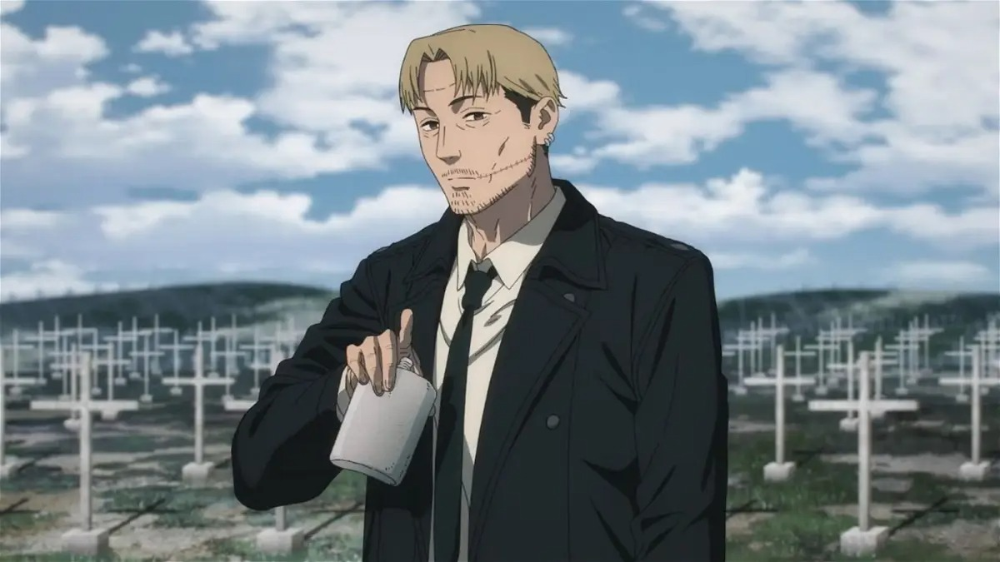
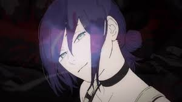

Chainsaw Man
Chainsaw Man es un manga y anime creado por Tatsuki Fujimoto. La historia sigue a Denji, un joven que se convierte en un cazador de demonios para pagar sus deudas, fusionándose con su perro demonio Pochita para convertirse en Chainsaw Man.
Leer másBienvenidos a mi blog sobre Chainsaw Man
Conoce las últimas novedades sobre esta serie
Personajes Principales
Aki Hayakawa
Denji
Otros personajes importantes
En el mundo de Chainsaw Man, hay muchos personajes que juegan roles cruciales en la trama. A continuación, te presentamos algunos de ellos:

Power
Himeno

Kishibe
